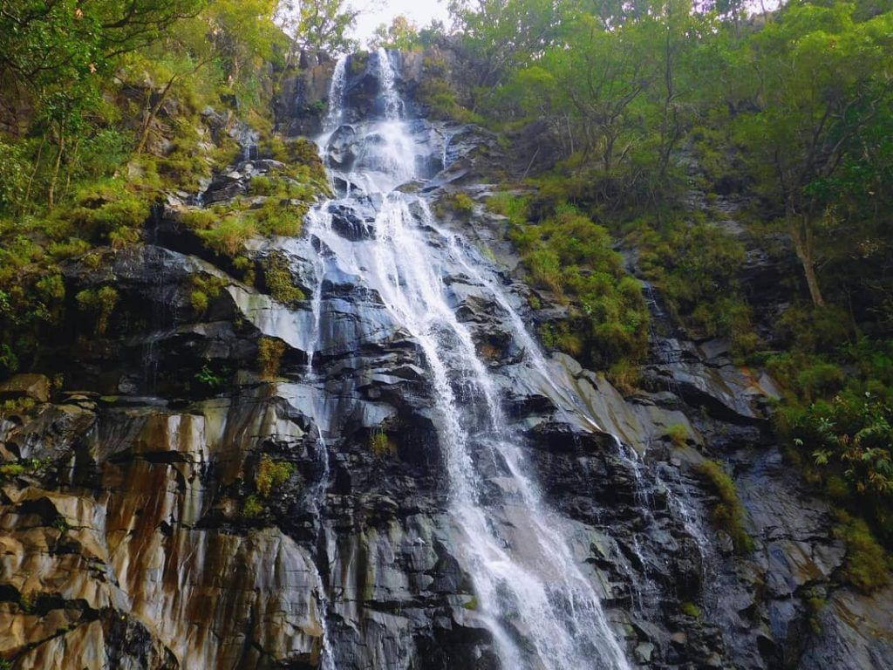

Listen Audio

Serene Pachmarhi
Popularly known as the 'Satpura ki Rani' (Queen of Satpura) is the glorious land called Pachmarhi in the second largest state of India, Madhya Pradesh. Tucked away 1,607m above sea level, Pachmarhi is a perfect platter for all the travel junkies that offer scenic landscapes, gushing waterfalls, pristine pools and lush green forests.
Known for the mighty hills that surround the region, the town is filled with places that can easily take you away from your stressful lives and make your hard-to-get holidays a memorable one.
Best Places to Visit


